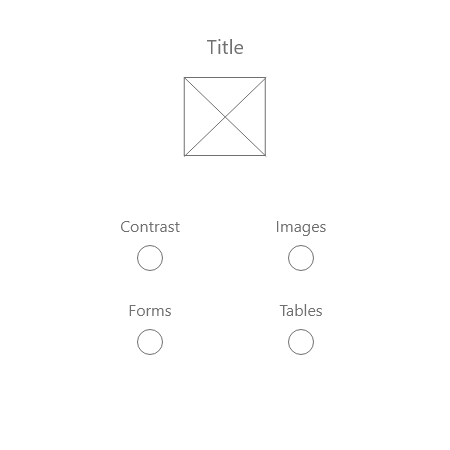
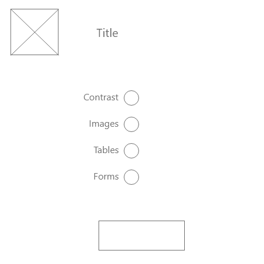
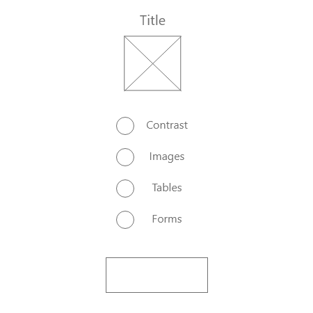
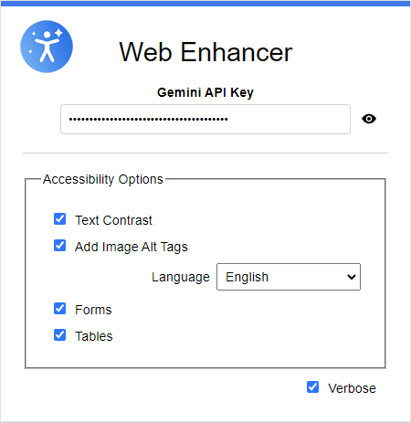

CASE STUDY
Chrome Extension with Gemini

Project Overview
Developed a Chrome extension named "Web Enhancer" designed to improve web accessibility for users with disabilities. The extension enhances the browsing experience by automatically correcting text contrast, adding image alt tags in a selected language, inserting ARIA labels into form elements, and updating HTML tables for accessibility.
Project duration July 2024 - August 2024.
My role within this project is that of a Lead UX designer, UX Researcher, UX Tester and Developer.
Tools & Technologies: JavaScript, HTML, CSS, Chrome APIs, ARIA standards, Web Accessibility, i18n, DOM Manipulation.
| Tech Stack | JavaScript, HTML, CSS, Chrome APIs, ARIA standards, i18n |
|---|---|
| Project Type | Chrome extension |
| Role | Lead UX Designer, UX Researcher, UX Tester, Developer |
| Completion Date | Aug 2024 |

Key Features
- Automatic Contrast Correction: Automatically corrects text contrast so content is readable for users with visual impairments.
- Multilingual Alt Text: Adds image alt tags in a selected language for screen reader users.
- ARIA Label Insertion: Inserts ARIA labels into form elements so assistive technology can identify them.
- Accessible Table Markup: Updates HTML tables with the markup screen readers need to interpret them correctly.

Project Gallery





Design and Development Insights
As the sole researcher, designer, and developer, I worked end to end — from accessibility research through to a working Chrome extension.
User Research
Conducted extensive user research and testing focused on web and app accessibility to ensure compliance with accessibility standards (WCAG 2.1). This involved identifying and addressing barriers for users with disabilities, including those with visual impairments, motor impairments, and cognitive disabilities.
Identified Points of Interest
- WebAIM's Million Report, which consistently highlight that low contrast text, missing alt text, and unlabeled form fields are among the most common accessibility issues found on the web.
- Studies, such as the WebAIM Million Report, consistently show that the most frequent accessibility failures on the web include low contrast text, missing alt text, and unlabeled form fields. This extension directly targets these widespread issues to improve overall accessibility.
- By addressing core accessibility issues, this extension significantly improves the user experience for individuals with disabilities. Research highlights that inaccessible websites force users to abandon pages due to frustration, preventing them from fully participating in online activities.
- Providing alternative text for images is essential for users who rely on screen readers, enabling them to understand visual content. The inclusion of alt text functionality in this extension ensures that websites comply with this critical accessibility requirement.
- Properly labeled forms are essential for users who navigate with assistive technologies. Unlabeled form fields create barriers, making it difficult for users to complete tasks. This extension ensures all form elements are properly labeled, improving usability for everyone.
Pain Points Identified
- Low Contrast Text: Text does not have sufficient contrast with its background, making it difficult to read for users with visual impairments, such as color blindness or low vision.
- Missing Alt Text: Many images lack alt text, making it impossible for screen reader users to understand the content of those images.
- Unlabeled Form Fields: Form input fields are missing associated labels, causing confusion for screen reader users who cannot determine what information is required.
Prototypes
User flow to show the submission process from both the user perspective as well as the Administrator.
Extension
The final extension UI, shown above in the gallery, brought together the contrast correction, alt text, ARIA labeling, and accessible table features into one cohesive tool.

Lessons Learned & Future Improvements
Impact
The "Web Enhancer" Chrome extension has the potential to significantly improve web accessibility and inclusivity by automating best practices such as adjusting text contrast, adding alt text, and enhancing form and table accessibility. This tool empowers developers and content creators, lowering the barrier to creating accessible websites even for those without extensive knowledge of accessibility standards. By ensuring websites comply with global regulations like WCAG and ADA, the extension helps organizations mitigate legal risks while reaching a broader audience, including users with disabilities and non-English speakers.
Beyond the technical benefits, the extension promotes a culture of inclusivity in the digital space by making accessibility improvements simple and widespread. As more websites adopt these practices, users with disabilities will enjoy a better browsing experience, leading to increased engagement and participation in the digital world. The extension's global reach, combined with its ability to raise awareness of accessibility issues, can contribute to a more equitable and inclusive internet for all.
What I Learned
Building the "Web Enhancer" Chrome extension provided valuable insights into web accessibility and user-centered design. It deepened my knowledge of WCAG and ARIA standards while honing my skills in Chrome extension development, frontend design, and internationalization. The project emphasized the importance of automating accessibility improvements to reduce barriers for developers and users alike. It also highlighted the need for balancing usability with performance, handling sensitive data securely, and ensuring cross-browser compatibility. Ultimately, this project reinforced my commitment to creating more inclusive digital experiences.
EXPLORE MORE
Continue through the portfolio.
Browse the complete project collection, or reach out if you would like to discuss the engineering and design decisions behind this work.